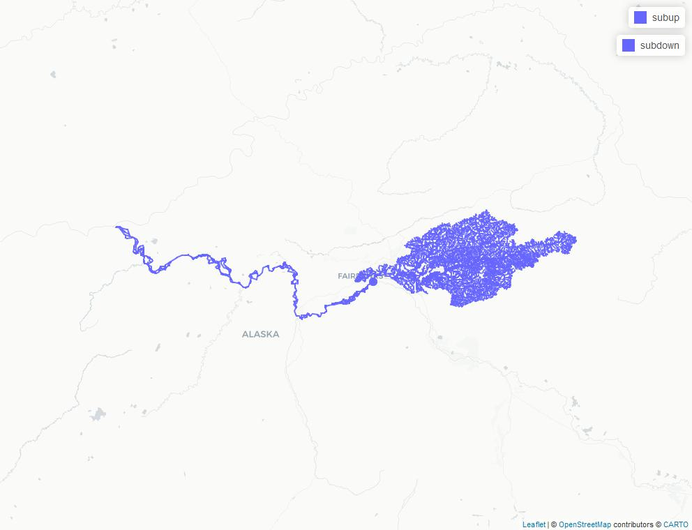

This article demonstrates how to work with the NHD flow table using nhdplusTools and hydroloom.
In this first block, we will download, open, and filter the data to prepare to work with it as a network.
library(hydroloom)
library(dplyr)
dir <- nhdplusTools::download_nhd(nhdplusTools::nhdplusTools_data_dir(),
"1908", TRUE)
fs <- list.files(dir, pattern = ".*1908.*.gdb", full.names = TRUE)
# Dropping Z and M and making sure everything is LINESTRING helps later.
fl <- sf::st_cast(sf::st_zm(sf::read_sf(fs, "NHDFlowline"), "LINESTRING"))
# remove any coastal (ftype 566) features
fl <- filter(fl, ftype != 566)Now that we have a network ready to go, we need to figure out a
subset that we want to work with. Here, we’ll use
index_points_to_lines() to find a line near the outlet of
the Chena River in Alaska.
# this is a seed point near the outlet of a watershed to consider.
point <- sf::st_sfc(sf::st_point(c(-147.911472, 64.796633)),
crs = 4269)
# now we get the line our point is along.
i <- index_points_to_lines(fl, point)
# Let's see what we have.
sub <- fl[fl$permanent_identifier == i$permanent_identifier, ]
mapview::mapview(list(sub, point))Now we load up the NHD “flow table” which contains a list of connections between flowlines. Where there are diversions, the same “from” will have multiple “to” connections so this table doesn’t join cleanly to the flowline table. The following code prepares the flow table and runs a network navigation over it to find all the features we need.
Note that in check_hy_graph() we are only finding
flowlines that flow directly into eachother, not loops of three or more
features. We can search for loops like that with the
loop_check flag to check_hy_graph but don’t
need it to get navigate_network_dfs() to work.
# remove coastal and make terminals go to an empty id.
flow_table <- sf::read_sf(fs, "NHDFlow") |>
filter(from_permanent_identifier %in% fl$permanent_identifier) |>
mutate(to_permanent_identifier =
ifelse(!to_permanent_identifier %in% from_permanent_identifier,
"",
to_permanent_identifier))
# Remove loops found in navigate network dfs
remove <- hydroloom::check_hy_graph(flow_table)
# this is naive and these removals would normally be reviewed.
flow_table <- flow_table |>
mutate(row = 1:n()) |>
filter(!row %in% remove$row)
down <- navigate_network_dfs(flow_table, sub$permanent_identifier, direction = "down")
up <- navigate_network_dfs(flow_table, sub$permanent_identifier, direction = "up")
subdown <- fl[fl$permanent_identifier %in% unique(unlist(down)),]
subup <- fl[fl$permanent_identifier %in% unique(unlist(up)),]
map_image <- "flow-table-fig.jpeg"
map <- mapview::mapview(list(subup, subdown, point))
mapview::mapviewOptions(fgb = FALSE)
mapview::mapshot(map, file = map_image)
knitr::include_graphics(map_image)
There’s plenty more we could do from here, but this vignette shows the core of what’s needed to get the NHD flow table working with hydroloom.
Looking for help or want more in this vignette? Submit an issue at: https://github.com/DOI-USGS/hydroloom/issues